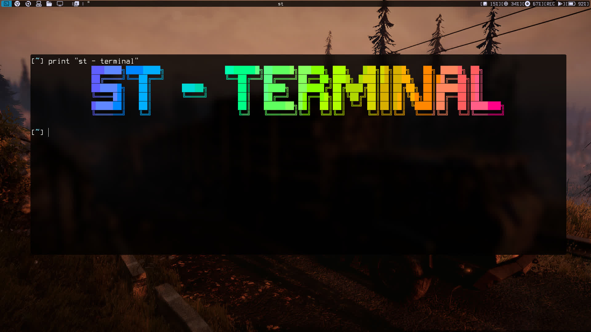
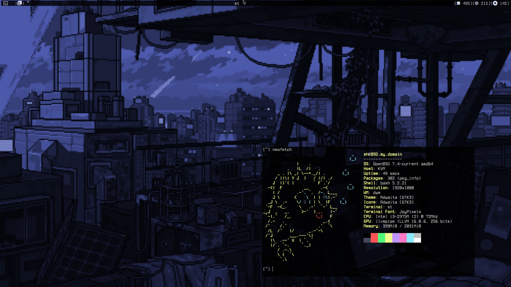
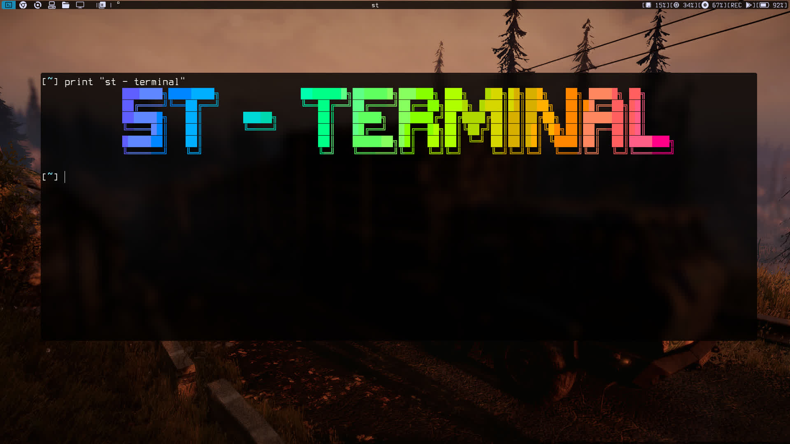
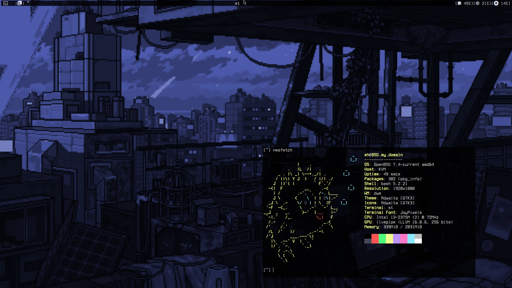
 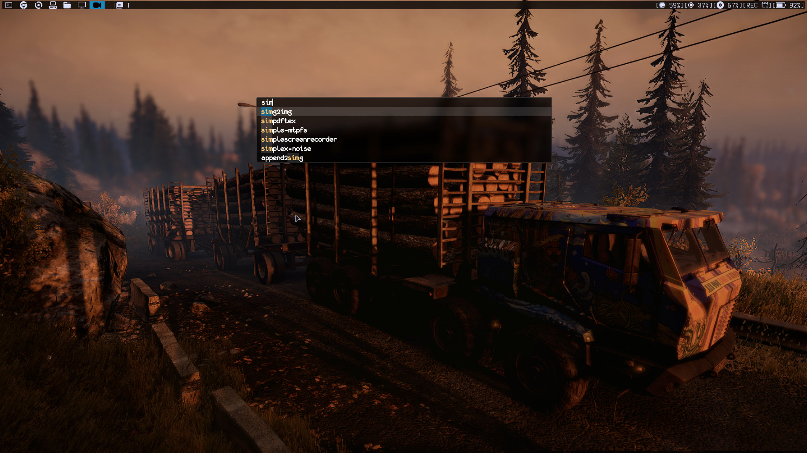
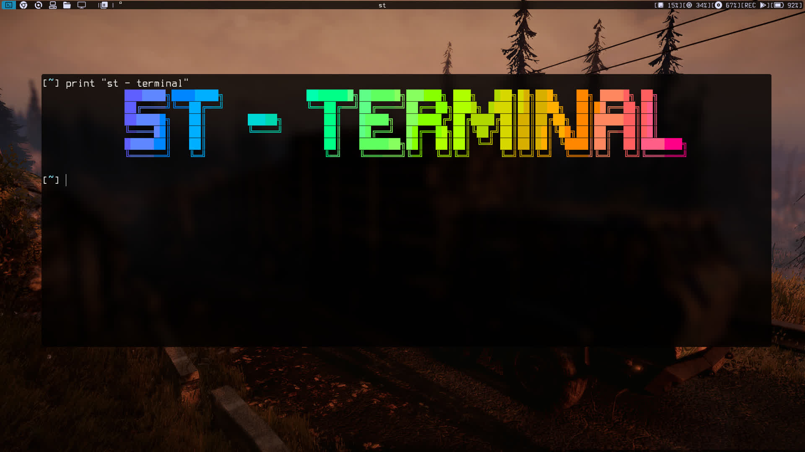
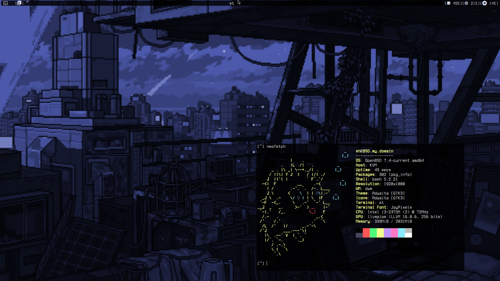
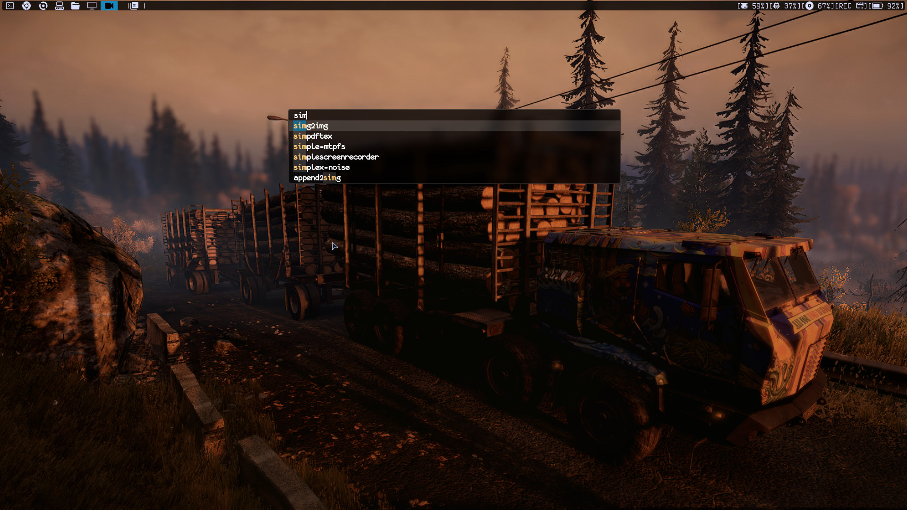
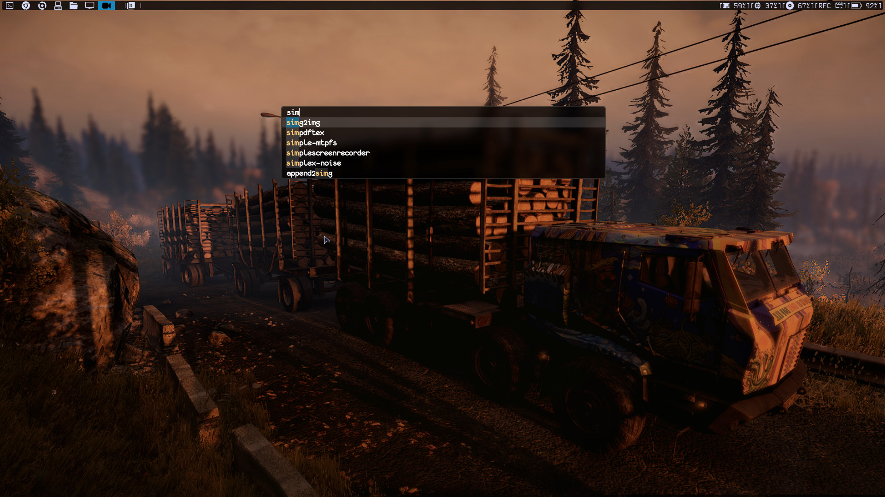
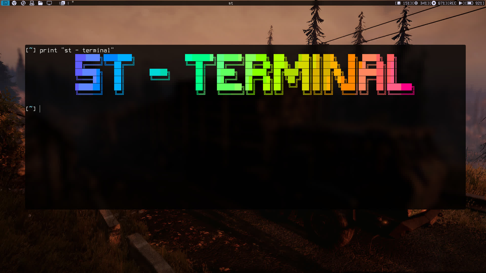
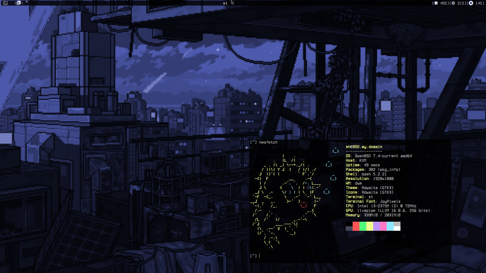
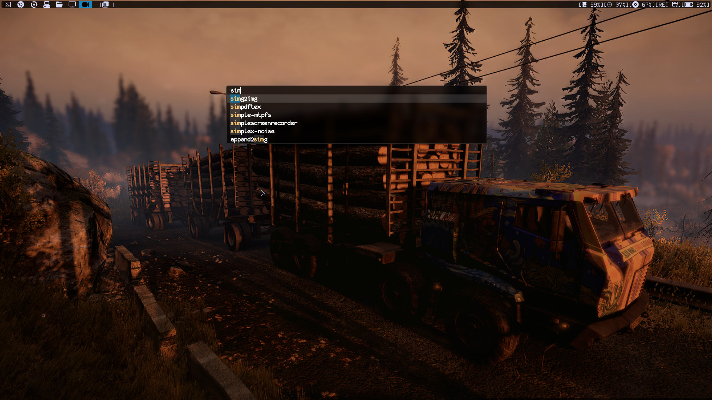
Setup a nice development environment with Alpine Linux and i3wm
A step-by-step guide to installing Arch Linux.
Learn how to configure Virt Manager on Void Linux.
Understanding how my DWM config is setup
How to setup OpenBSD With the Suckless Desktop
A guide to setting up Suckless utilities using XBPS-SRC on Void Linux.
command that i use with ffmpeg day to day
Instructions on how to use T2SDE Linux with Windows Subsystem for Linux.
A script for installing Void Linux.
This collection of README files provides detailed instructions and scripts for various Linux setups and configurations. It includes guides for installing and configuring different Linux distributions, as well as setting up development environments and tools. Feel free to explore each guide and adapt the scripts to your needs.
Connect with me: